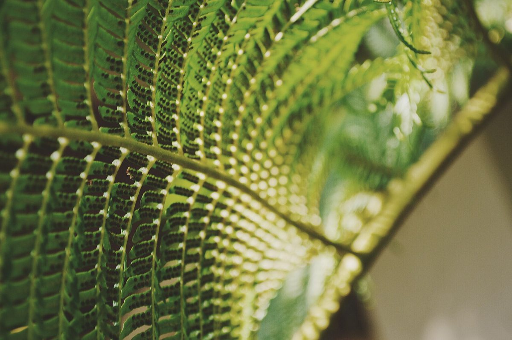
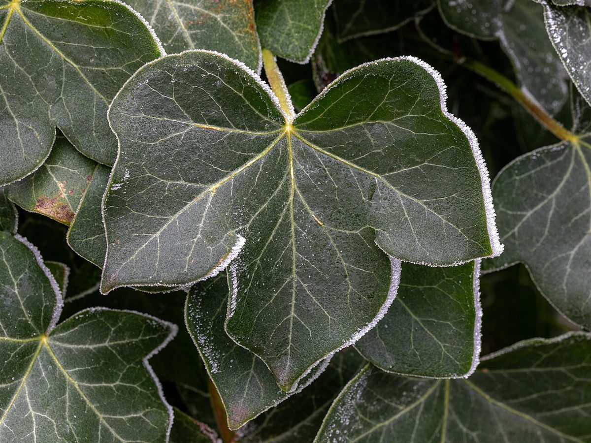
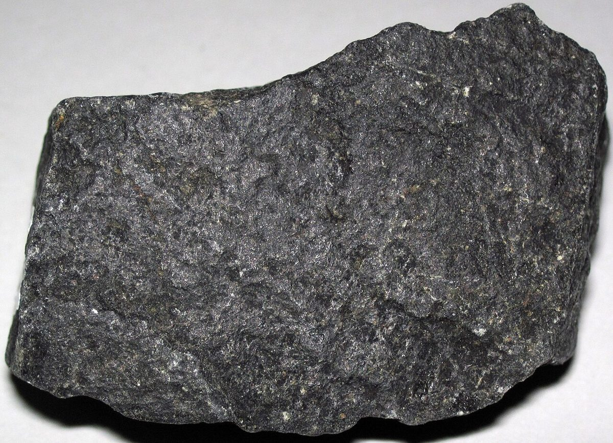

海松みる / #6e6b41




制作側の連想
制作側は、屋号の「mill」を日本語の「みる」と読んでみました。「みる」は、緑がかった渋い色の名前(海松色)にも使われる音です。そこでこのページは、海松系の三つの色(海松・海松茶・藍海松茶)を軸に作っています。これは制作側の連想で、お店の理念・屋号の由来とは無関係です。屋号の意味は分かりません。
三つの色
写真は佐世保市やお店のものではありません。色のイメージで選んだ、国外・撮影地不明のフリー素材です。





ご案内
| 所在地 | 〒857-1172 長崎県佐世保市東浜町687-30 |
|---|---|
| 電話 | なし |
| 営業時間 | 準備中 |
| 定休日 | 準備中 |
| ご予約 | 準備中 |
| 駐車場 | 準備中 |
| SNS | Instagram @mill_coffeestand |